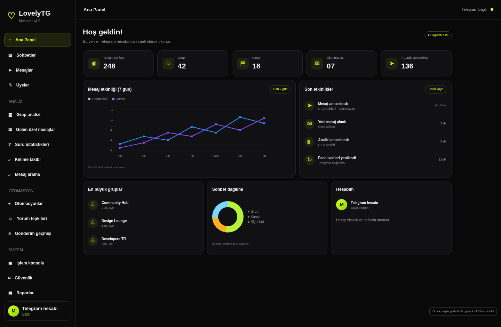
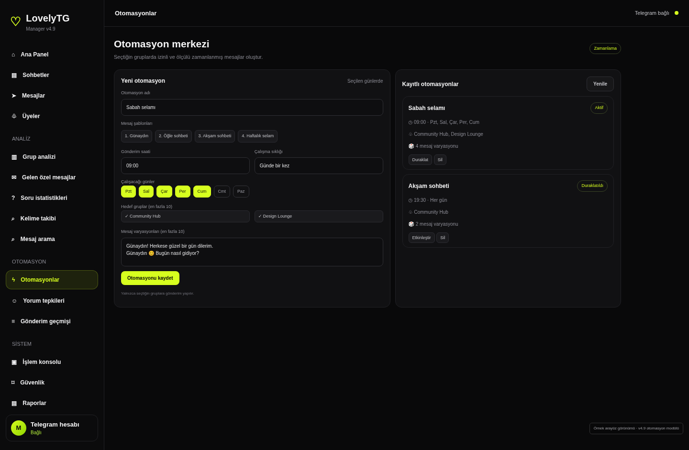
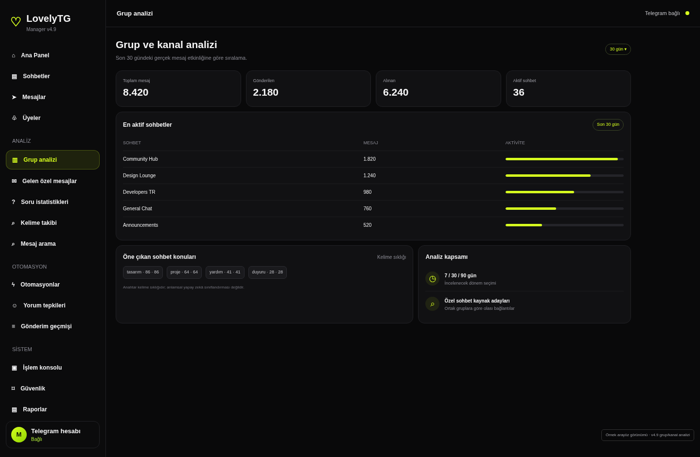
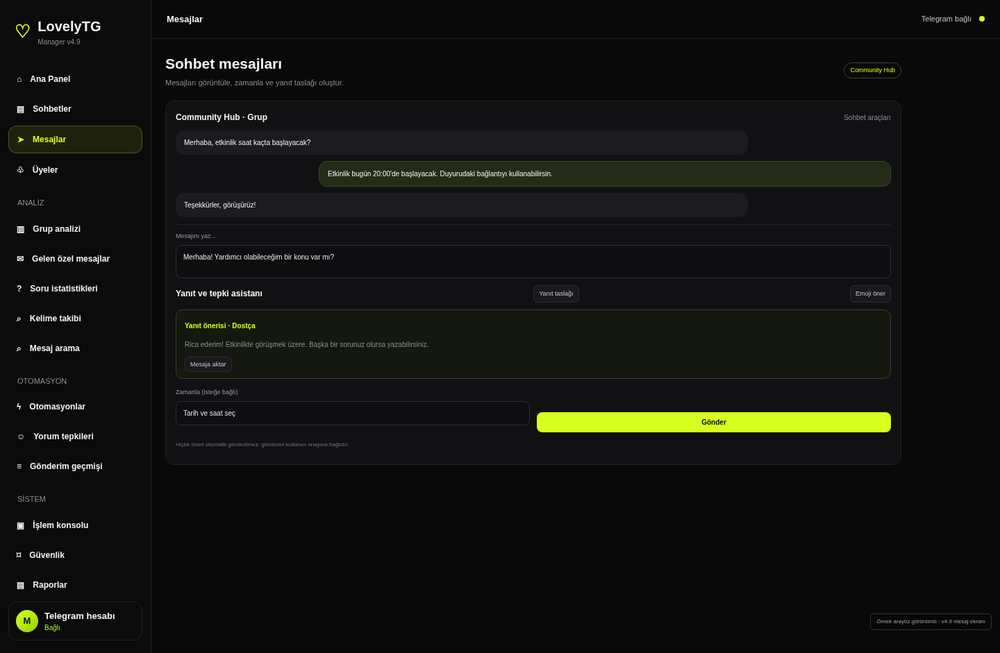

01 / ANA PANEL
Hesabının genel görünümü
Toplam sohbet, grup, kanal, okunmamış mesaj ve 7 günlük gönderim istatistikleri; mesaj etkinliği grafiği, son etkinlikler, en büyük gruplar ve sohbet dağılımı.
Gerçek Telegram verilerini tek panelde görüntüle. Sohbetlerini düzenle, gruplarını analiz et, mesajlarını yönet ve seçtiğin gruplar için zamanlanmış otomasyonlar oluştur.

Bu tanıtım sayfasındaki ekranlar, gönderdiğin LovelyTG v4.9 ön sürümünün gerçek HTML/CSS yapısı, renkleri ve modül adları temel alınarak hazırlandı. Rastgele bir SaaS tasarımı yerine ürününün kendi görünümünü taşıyor.
Ürün ekranlarını incele ↗Aşağıdaki arayüz görselleri LovelyTG v4.9 kaynak kodundaki ekran düzeni ve bileşenlerinden oluşturuldu. Örnek veriler temsilidir; canlı kullanımda veriler bağlı Telegram hesabından gelir.
Toplam sohbet, grup, kanal, okunmamış mesaj ve 7 günlük gönderim istatistikleri; mesaj etkinliği grafiği, son etkinlikler, en büyük gruplar ve sohbet dağılımı.

Otomasyon adı, saat, çalışma günleri, hedef gruplar ve mesaj varyasyonları. Kayıtlı otomasyonları etkinleştir, duraklat veya sil.

7, 30 ve 90 günlük mesaj etkinliği, en aktif sohbetler, gönderilen/alınan mesajlar ve öne çıkan kelime sıklıkları.

Sohbet mesajlarını görüntüle, mesajı hemen veya ileri tarihli planla; yanıt taslağı ve emoji önerilerini incele. Öneriler otomatik gönderilmez.
LovelyTG v4.9 içindeki menü ve fonksiyonlara göre hazırlanmış özellik listesi.
Sohbetleri listele, türüne göre filtrele; mesajlara, üyelere ve dışa aktarma araçlarına geç.
Grup ve kanallardaki üyeleri listele, isim veya kullanıcı adıyla ara ve CSV olarak indir.
Seçili sohbetlerin son mesajlarını yerel veritabanında dizinleyip kelime veya ifadeyle ara.
Belirlediğin kelimeleri sohbetlerde tara ve eşleşme sayılarını görüntüle.
Sohbet listesi, 7 günlük mesaj etkinliği ve grup/üye verilerini CSV olarak indir; sohbet ve profil dışa aktarma araçlarını kullan.
Gelen özel mesaj görünümünü ve ortak grup kaynak adaylarını incele.
Seçilen gruplarda anket/soru oluştur ve gönüllü yanıtların sonuçlarını görüntüle.
Bir fotoğraf klasörü seç, görseli kendin belirle ve ayrı manuel onayla uygula.
Çalışan işlemleri, otomasyon durumlarını, canlı olay akışını ve durdur/devam kontrollerini izle.
Açık oturumları görüntüle; otomasyon ve kelime ayarlarını JSON olarak yedekle veya geri yükle.
Otomasyon, anahtar kelime ve hata olaylarının kayıtlarını takip et.
Yorum ve tepki araçlarını ayrı otomasyon modülünden yönet.
Not: AI desteği mevcut kaynakta mesaj analizi, yanıt taslağı ve emoji önerisi gibi yardımcı işlevlerdir; genel amaçlı, sınırsız bir AI sohbet sistemi olarak sunulmamıştır.
Starter, Pro ve Ultimate paketleri haftalık, aylık veya yıllık lisans olarak sunulabilir. Paket limitleri satış öncesinde ürünün gerçek lisans sistemiyle eşleştirilmelidir.
Fiyatlar ve paket limitleri demo değerleridir. Gerçek lisans kontrolü ve paket bazlı yetkilendirme backend tarafında uygulanmalıdır.
Ödeme bilgileri yönetici tarafından tanımlanır. Transfer açıklamasına sipariş kodu eklenir; dekont ve ödeme kontrolünden sonra lisans etkinleştirilir.
Ağ ve adresi transfer öncesinde mutlaka doğrula.
Paketi seç, iletişim bilgilerini ve ödeme yöntemini belirt. Demo form talep metnini hazırlar.
Görseller, gönderdiğin v4.9 ön sürümündeki gerçek renk paleti, navigasyon isimleri, bileşen düzeni ve ekran işlevleri temel alınarak oluşturuldu. Sayısal içerikler örnek veridir.
Uygulama, bağlı Telegram hesabından sohbet ve mesaj verilerini okur. Bu tanıtım sayfasındaki ekranlar statik örnek görünümlerdir.
Bu tanıtım sitesi yalnızca talep metni hazırlar. Gerçek otomatik lisans aktivasyonu için ödeme doğrulaması, kullanıcı hesabı ve sunucu taraflı lisans sistemi geliştirilmelidir.
Hayır. Telegram'ın kullanım kuralları ve bekleme sınırları geçerlidir. Otomasyonlar izinli, ölçülü ve seçilen hedeflerle sınırlı kullanılmalıdır.